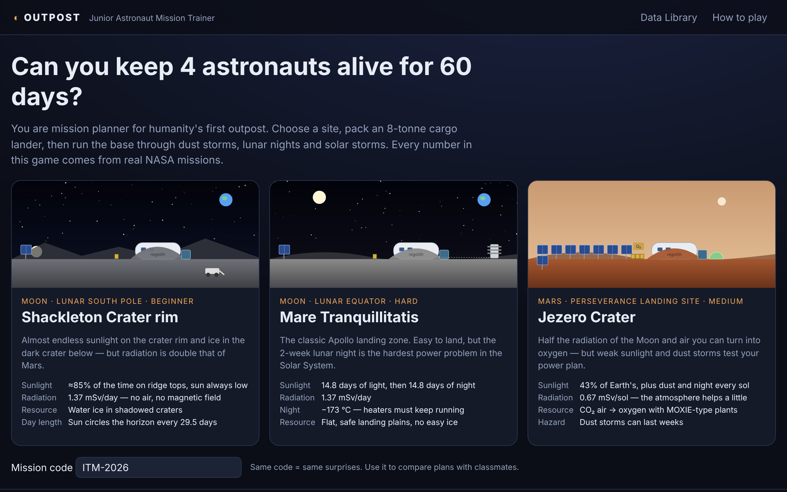
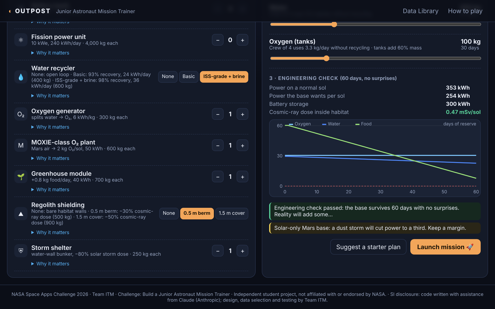
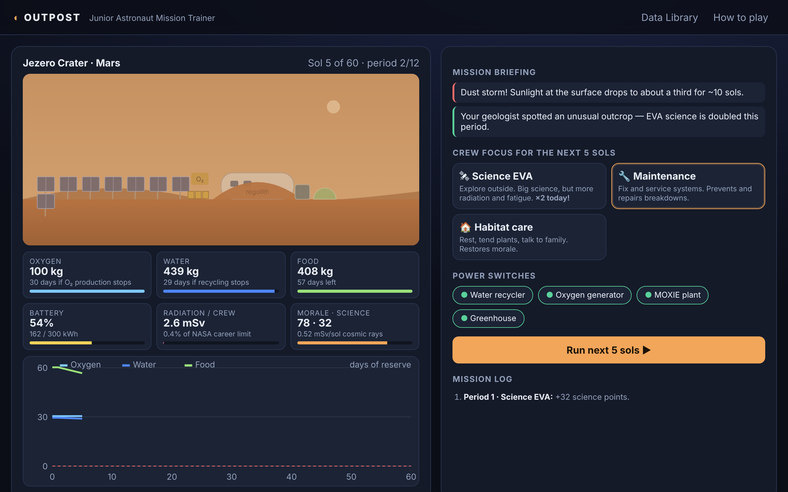
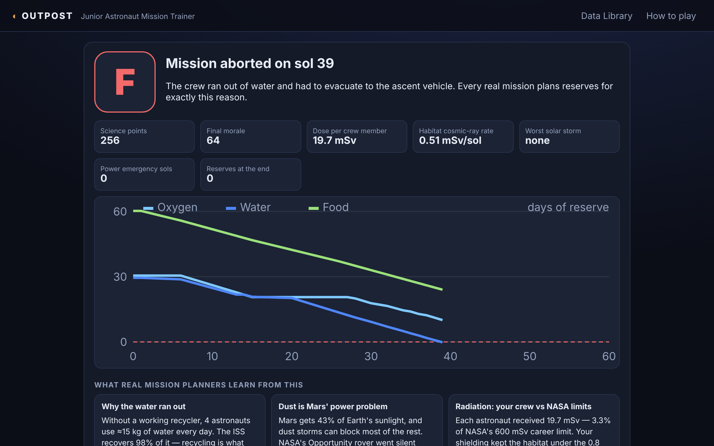

Can you keep 4 astronauts alive for 60 days?

A browser game where students plan and run a lunar or Martian outpost, balancing life support, radiation shielding, power and food with real NASA mission data.
Team ITM · Aktau, Kazakhstan
bulatbekdanial.github.io/outpost-trainer
Most space content for kids says “astronauts need air, water and food” and stops there. Real mission planning tools are built for engineers.
The interesting part sits in between: every choice costs something. More shielding means less food. Solar panels fail at night. Recycling needs power.
A 20-minute game where those trade-offs are the whole game. Students make a plan, watch it meet reality, and see exactly why it worked or failed, explained with NASA's own numbers.

Plan. Pack an 8-tonne lander: power, recycling, O₂, greenhouse, shielding, supplies. A live engineering check simulates 60 days.

Operate. Every 5 days choose the crew focus and which systems get power. Dust storms, solar storms, sunsets and breakdowns arrive.

Debrief. A grade and personal lessons: why the water ran out, how your dose compares with NASA limits.
Near-constant sunlight on crater ridges and ice to mine, but twice the radiation of Mars. Without 1.5 m of regolith the habitat misses NASA's 0.8 mSv/day design target.
A night every sol needs batteries; a dust storm cuts solar power to a third. MOXIE-class plants turn CO₂ into oxygen if you can power them.
Batteries for one lunar night would weigh ≈15 t. Students discover on their own why NASA is building fission surface power.
Same mission code = same surprises, so a whole class flies one mission and compares plans.
| O₂ 0.82 kg, food 1.8 kg per crew-day | NASA Life Support Baseline Values & Assumptions Document (2022) |
| ≈3.8 kg water/day, recovery 93% → 98% | NASA ISS water recovery milestone (2023) |
| Mars surface 0.67 mSv/day, cruise 1.8 mSv/day | Curiosity RAD (Hassler et al., Science 2014) |
| 600 mSv career, 250 mSv per event, 0.8 mSv/day | NASA-STD-3001 radiation protection brief |
| MOXIE: 122 g O₂, 12 g/h peak | NASA/JPL (2023) |
| Mars 586 W/m², lunar cycle 29.53 days | NASA NSSDCA Mars and Moon fact sheets |
| Dust storms, fission power, polar ice, Veggie | NASA Opportunity, Fission Surface Power, LCROSS, Veggie |
Simplified values (e.g. shielding factors, base load) are labelled “game estimate” in the in-game Data Library.
• Kazakh and Russian versions for schools in Kazakhstan
• Teacher mode with class leaderboard
• Longer missions where greenhouses pay off
• Live space-weather events from NASA data feeds
bulatbekdanial.github.io/outpost-trainer
Code: github.com/BulatbekDanial/outpost-trainer (MIT license)
Students from Aktau, Kazakhstan, with robotics, engineering and EdTech experience.
SI disclosure: game code and these slides were written with help from Claude (Anthropic). Concept, mechanics, data selection and testing by Team ITM. No SI-generated images; screenshots show our own game. No NASA logos or insignia used.